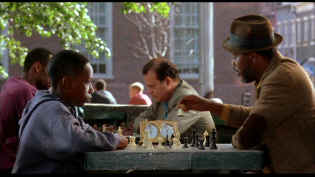

| Fresh (SE)/ A-,A- |
| Miramax/1994/114/ANA 1.85 |
Surviving the ghetto is like walking a minefield, or
maybe dancing on the chess board. A young man is faced with violence
and temptation at every school yard and street corner. Fresh is the
nimble journey of one young boy through the perilous pavement of the inner
city.
Boaz Yakin's crisp and incisive script is
brilliantly paced. Violence is endemic to the film just as it is to
the ghetto. It's revealed with shocking suddenness. It explores a number
of powerful issues, but perhaps most importantly, the how the ghetto
strips self-esteem from its young. Yakin succeeds in painting an
interesting contrast between Fresh's existence in school and in the
streets. School and the ghetto meet in painful collision in the school
yard.
 |
|
The clocks running on Fresh. ©Miramax |
Fresh is positively Machiavellian in his
machinations, but the character's native intelligence is supported by both
the script and the performance. The film is incredibly powerful. Fresh
is laced with powerful bursts of devastating emotional impact. I found the
film could take you by your throat and stop your breadth with shocking
imagery. Equating the lessons of chess with the realities of
the streets is a touch worthy of a grand master.
Sean Nelson's cool screen presence as Fresh goes
a long way toward making this a special film. He carries the film on his
frail shoulders with admirable strength, like a sly wounded animal that
somehow finds strength in the darkest places. Sam Jackson is wonderful as
Fresh's father; hard as tempered steel yet sentimental. Giancarlo
Esposito does fine work as local drug dealer Esteban.
Yakin's team of filmmakers perform wonders under his
lead. The camera of Adam Holender fixes a strong point of view through
Fresh's eyes. Wonderful cinematography. The film's rhythms are captured to
perfection by Stuart Copeland majestic score. It's orchestrated with
impressive range. Copeland has created symphony that represents
Fresh's life. It captures New York's inner city and it finds the right
chords for Fresh internal feelings.
Fresh is an outstanding DVD production. A
fine looking bright transfer with excellent overall dynamic range, images
have excellent theatrical pop. Colors are richly saturated with consistent
depth. Detail is very clean. It so clean you can look at the texture
of the tee-shirt Fresh wears in the school yard and count the fibers.
There's no edginess even at high peak transitions. Straight lines and fine
details are perfectly stable. Black level is very good with shadow
detail in balance. Check out the beautiful glow on Fresh's face in the
bedroom sequence. Night sequences pack visual punch with outstanding
contrast range and deep blacks. The transfers captures the subtlety of the
fine lighting. There are no evident artifacts. Music is executed
with beautiful range and open feeling on the Dolby Digital 2 channel
surround track.
Packaged as a special edition, Fresh features
audio commentary from articulate writer/director Boaz Yakin. Yakin's
commentary is very anecdotal, especially in the beginning, but it sets the
stage well for his own background and the beginnings of the project. Even
when not scene specific, the commentary is always interesting. Various
cast auditions tapes, a behind the scenes featurette, and storyboard
comparisons complete the presentation.
Reviewed on a Sharp 9000VX DLP Projector

Selections from the Feature
Archive include articles on Akira Kurosawa, Frank Darabont, Blonde Bimbos, Hollywood Street Gangs, or Vietnam: The Hollywood Pariah, and many
more....

Hail, Hail, the Gangs in Hollywood
From Angels with Dirty Faces to West Side Story to Menace II Society, Hollywood has depicted youth gangs as reflections of the times.


Timely DVD reviews and an easy-to-use interface. Weekly
contests.
 Kinoeye Archive
Kinoeye Archive
This is a resource of all content-rich materials on the web
relating to Central and East European cinema. The ultimate aim of the
Kinoeye Archive is to provide a near-as-damn-it definitive index of
intelligent and thoughtful English-language analysis of Central and
Eastern European cinema on the web.

CinemaQuest has matched the correct TV color of gray in a light
fixture. Joe Kane
Monitor bias lighting in a pre-packaged configuration. Take the strain off
your eyes.

A new entry in the 2001 home theater site sweepstakes. Chief focus on
hardware reviews with a smattering of software.

Comprehensive DVD review database. Easy to use interface with
specific region searches.

Click on the DVD MIA symbol for profiles of DVDs missing
in action.
Add films to the DVD MIA Master List by filling out a simple
form. Click Here